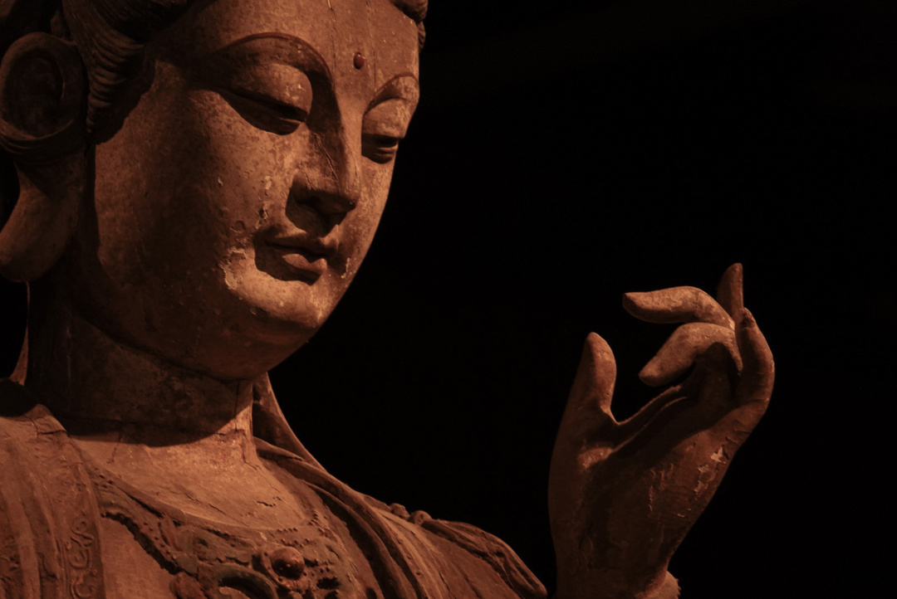

Ancient Chinese Buddha Statue Art Exhibition
This Song Dynasty painted wooden statue of Guanyin Bodhisattva was made by skilled craftsmen of the Song Dynasty a thousand years ago. The overall sculpture is extremely smooth, elegant and refined, showing the aesthetic spirit of the Song Dynasty.